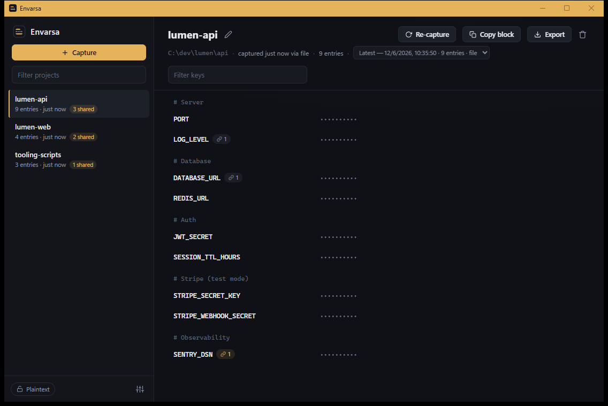
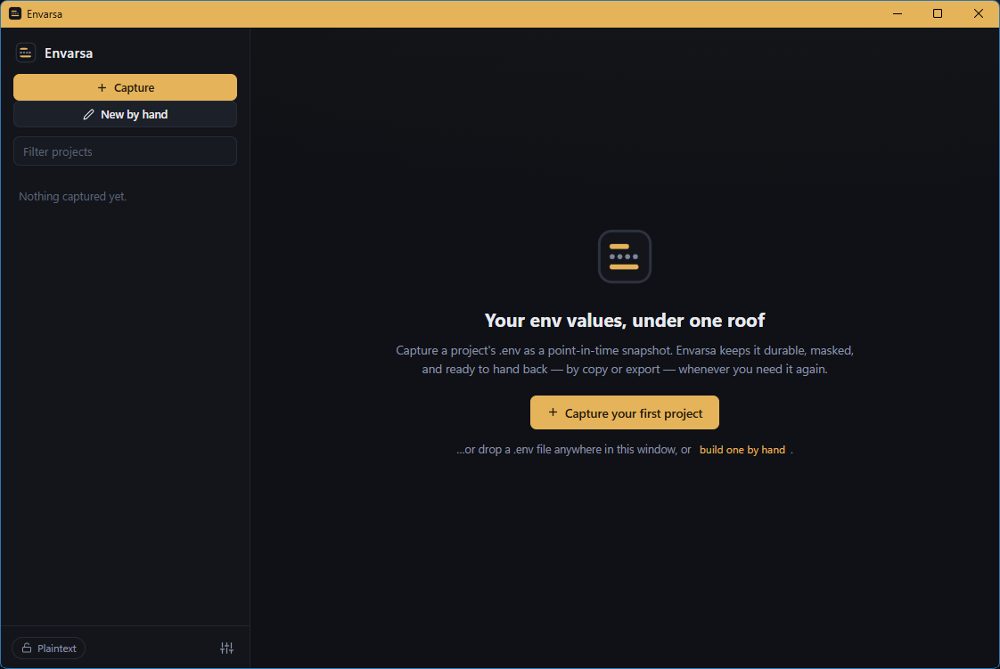
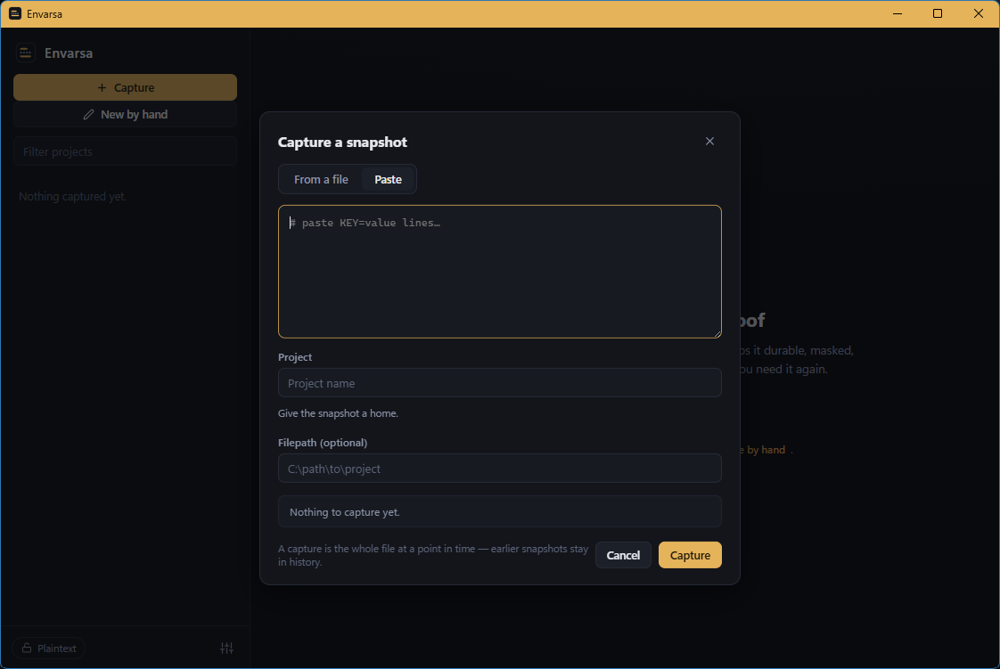
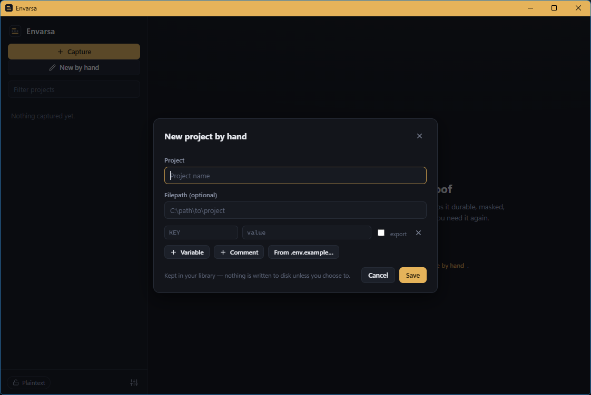
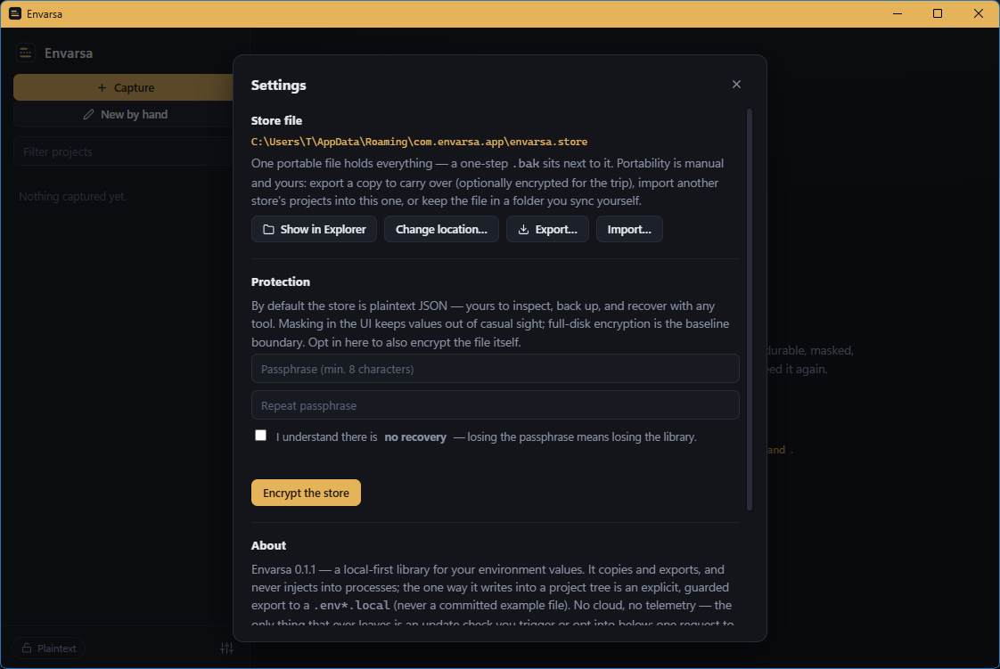

Envarsa — a local-first .env manager for Windows and Linux.
Capture a project’s .env as a snapshot, recall its
values masked, and hand them back by clipboard or export. Your environment variables
live in one file on your machine — no cloud, no telemetry.
Free & MIT-licensed, for Windows 10/11 and Linux · pick your install below
Click a value. Keys are always visible; values are dots until you ask, one at a time — then they hide themselves again. In the app: after 30 seconds, and whenever the window loses focus.

Sample data (ENVARSA_DEMO=1): three projects, nine keys on screen, every value masked.
# the problem
Why a dedicated .env manager
Your .env files are git-ignored on purpose and backed up by nothing — they accumulate,
drift, and vanish.
Scattered
One per project, per machine. Months later, the API key you need is in a folder you already deleted.
Duplicated
The same DATABASE_URL pasted into five projects. One got rotated, and now you can’t tell which value is current.
Easily lost
No backups, no history, no sync. A dead disk or a stray rm takes them with it — and they’re the one thing you can’t re-clone.
# how it works
How it works: capture, recall, hand back
Envarsa stores, copies, and exports your .env values. It never injects them into processes
or writes to your project tree unless you ask — and the only thing it writes is a .env*.local
you choose, never a committed example file.
01Capture
Import a .env by file picker, paste, or drop. Comments, blanks, and unparseable lines are kept byte-for-byte. Capture is manual; Envarsa never watches your files.
02Recall
Find a project by the name you chose, not a path. Duplicate keys are tagged overridden; keys shared across projects get a reuse badge — flagged, never linked.
03Hand back
Copy a value (straight to clipboard, never shown on screen), copy the block, or export a byte-identical .env. Copies clear after 30 seconds.
04History
Every capture appends a snapshot. View past ones read-only, or restore one as latest.
05Write a .env.local
Write a snapshot to a .env*.local you pick: merge to fill values while keeping the file’s comments and keys, or fresh to overwrite — with a preview first. Scaffold from a .env.example with unfillable keys blanked; committed example files are refused.
06Build it by hand
No file needed: type keys, values, and # comments into the structured editor and save. Editing a snapshot saves a new one and keeps the old.
# screenshots
Screenshots

.env onto the window.

.env.example. Nothing is written to disk unless you choose.
age encryption and an explicit no-recovery checkbox.# the store file
One portable store file
- Plaintext JSON by default. Read it, diff it, back it up with anything. Captured
.envtext is embedded verbatim. - Atomic writes. Temp file, fsync, rename, with a one-step
.baksibling. A corrupt store is never overwritten — the app offers the backup at startup. - Optional age encryption at rest (scrypt passphrase), decryptable with the reference age CLI. No recovery if the passphrase is lost.
- Manual portability. Export a copy (optionally age-encrypted) and import it elsewhere; projects merge, name conflicts flagged per project. Or sync the file yourself.
# default for installed builds — the portable zip
# keeps it beside the exe (overridable in Settings,
# or with the ENVARSA_STORE_PATH env var)
%APPDATA%\com.envarsa.app\envarsa.store # Windows
~/.local/share/com.envarsa.app/envarsa.store # Linux
# plaintext JSON — read it, diff it
{
"format": "envarsa-store",
"version": 1,
"projects": [ { "name": "acme-api",
"snapshots": [ … ] } ]
}# if encrypted, decrypt with the standard age CLI
$ age -d envarsa.store > store.json# security & privacy
Security and privacy
Envarsa keeps your values in one file and doesn’t phone home. The store is plaintext JSON by
default, with optional age encryption at rest; masking hides values on screen, not on disk.
Masking
Keys are always visible; values are masked until you reveal one, one at a time, and auto-hide after 30 seconds or on focus loss. Masking is structural — even unparseable lines are masked.
Sandboxed UI
The webview is sandboxed to the app’s own commands (CSP default-src 'self'). Values reach it only on explicit reveal, and single-value copies bypass it entirely. No command takes a filesystem path from the webview — dropped files are read in Rust, and import targets resolve behind opaque tokens.
Clipboard
Copies clear after 30 seconds and skip Windows clipboard history (Win+V) and the cloud clipboard. Linux has no such flag — a clipboard manager (Klipper, CopyQ) keeps its own copy, so clear it after copying a secret.
One file, by design
Everything in one file is the point — and the reason for atomic backups and opt-in age encryption at rest.
Network: one opt-in update check
No network calls by default. The only exception is the update check, off by default: a GET to api.github.com for the latest release tag, validated as semver, with nothing auto-downloaded. One module — the app’s entire network surface.
# faq
Frequently asked questions
Does Envarsa send my values anywhere?
No. Your values live in one file on your disk and never leave unless you export them yourself. The
only egress is an opt-in update check, off by default: one GET to api.github.com for the
latest release tag — no values sent, and nothing downloads or installs itself.
Is the store encrypted?
By default it’s plaintext, pretty-printed JSON you own. You can opt in to passphrase encryption at rest in the standard age format (scrypt) — readable by the reference age CLI. A lost passphrase can’t be recovered, which is why it’s opt-in.
Does Envarsa write into my projects or inject environment variables?
Only when you ask — it never injects into processes. The one write is a .env*.local on a
path you choose (merge, fresh, or scaffolded from a .env.example). A committed example file
(.env.example, .sample, .template, .dist) is always
refused, and the path is resolved and guarded in Rust, never taken from the webview. Using a value always
means you place it.
Which platforms does it run on?
On Windows 10 and 11 (x64), as a per-user installer or a portable zip — both need the WebView2 runtime, preinstalled on Windows 11 and on any Windows 10 kept current. On Linux (x64), as an AppImage — webview bundled, runs on any distro with glibc 2.35+ (Ubuntu 22.04+, Debian 12+, and peers) — or as a Debian package that pulls its dependencies from apt.
Why is every value masked, even boring ones like PORT?
Because masking is structural, not heuristic — Envarsa never guesses what counts as a secret, so even unparseable lines are masked, since a malformed line is as likely as any to hold one.
What happens if the store file gets corrupted?
Every save is atomic and keeps a one-step .bak sibling, so a corrupt store is never
overwritten. The app offers the backup at startup — restoring is only possible from that corrupt-store
gate, never against a healthy session.
How do I move my library to another machine?
Export a copy from Settings — optionally age-encrypted with a transport passphrase — and import it on
the other machine: its projects merge into the library there, with name conflicts flagged per project
(replace, rename, or skip). Or keep the live store file in a folder you sync yourself. The portable build
keeps the store beside the exe, so moving that folder takes your library with it — while installer and
Store builds keep it in %APPDATA% (Linux ~/.local/share).
Is Envarsa free and open source?
Yes — MIT-licensed, with the full source on GitHub: a no-build ES-module frontend over a Rust core (Tauri 2).
# download
Get Envarsa for Windows or Linux
Windows: the Microsoft Store build is the easy path — signed (no SmartScreen prompt) and auto-updating. Want a direct download, or on Linux? Grab an artifact from the latest GitHub release below.
Microsoft Store · Windows · recommended
One-click install, signed by the Store, and it updates itself. Best for most Windows users. Prefer a direct download? The .exe installer and portable zip are on GitHub — see the Windows options below.
Installer · Windows
Envarsa_x.y.z_x64-setup.exePer-user NSIS install — no admin prompt. Fetches the WebView2 runtime on the rare machine that lacks it.
Download installerPortable · Windows
envarsa_x.y.z_x64_portable.zipUnzip anywhere, run envarsa.exe — keep WebView2Loader.dll beside it. No
installer, no admin, nothing on PATH.
AppImage · Linux
Envarsa_x.y.z_amd64.AppImagechmod +x, run. The webview (WebKitGTK) and OpenSSL travel inside the file — no install,
no root, any distro with glibc 2.35+ (Ubuntu 22.04+, Debian 12+, and peers).
Debian package · Linux
Envarsa_x.y.z_amd64.debsudo apt install ./Envarsa…amd64.deb — apt pulls the dependencies (WebKitGTK 4.1,
libssl3) and adds the menu entry.